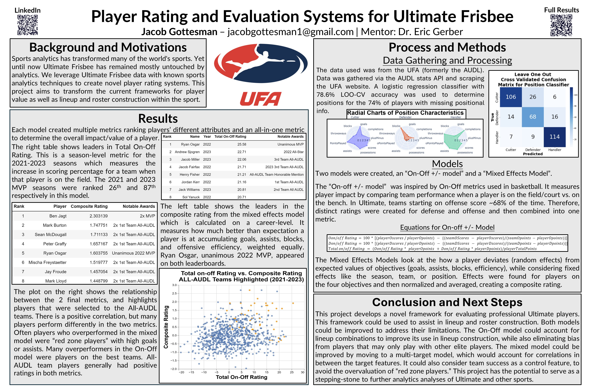

Ultimate Frisbee Analytics Player Rating System

Project Overview
The Ultimate Frisbee Analytics Player Rating System introduces two novel methodologies for evaluating player performance in the Ultimate Frisbee Association (UFA, formerly AUDL). Unlike traditional box score metrics, these approaches provide deeper insights into player contributions, addressing the complex team dynamics inherent to ultimate frisbee.
Motivation
While ultimate frisbee has grown substantially—now boasting 7 million players worldwide with governing bodies in 56 countries—the sport has lacked sophisticated analytical frameworks. This project fills that gap by developing rating systems that can:
- Help teams make more informed roster decisions
- Assist players in understanding their contributions beyond basic statistics
- Enhance fan experience through accessible and insightful metrics
- Identify undervalued talent across the league
Data Collection and Preparation
The project leverages multiple data sources from the UFA:
- Career player statistics dating back to 2012
- Detailed play-by-play data (available from 2021 onward)
- Positional information (available for approximately 28% of players)
A key innovation was the development of a positional classifier to address the limited availability of position data, a crucial component for performance evaluation.
Methodology
Position Classification
Given that only 28% of players had position data, I created a machine learning classifier to predict positions for the remaining players:
- Implemented and compared multiple classification algorithms (random forest, logistic regression)
- Achieved an 80% weighted F1 score using a random forest model with cross-validation
- Successfully classified players into three positions: handler, cutter, and defender
- Identified key statistical indicators that differentiate positions in ultimate frisbee
Player Rating Systems
The project developed two complementary rating systems:
1. Mixed-Effects Model
This statistical model evaluates how players perform relative to expectations by:
- Accounting for fixed effects (team, position, year, points played)
- Analyzing player performance as random effects
- Targeting four key metrics: goals, assists, blocks, and offensive efficiency
- Creating a composite rating that balances offensive and defensive contributions
2. On-Off Plus-Minus Model
Adapted from basketball analytics, this model measures a player's impact on team success by:
- Comparing team performance with the player on the field versus off
- Creating separate models for offensive and defensive impact
- Weighting these components to produce a comprehensive rating
- Quantifying a player's contribution beyond individual statistics
Key Findings
The analysis revealed several interesting insights:
- Both models successfully identified league-recognized top performers, with seven of the top eight players in the mixed-effects model having received UFA honors
- The models identified potentially undervalued players who had not received formal recognition
- Positional trends emerged, particularly in the on-off model which showed a strong preference for handlers
- The comparison between models showed only moderate correlation, suggesting they capture different aspects of player value
Interactive Web Application
The results are publicly accessible through a Streamlit web application, allowing users to:
- Explore player ratings and rankings across different positions and teams
- Compare players using multiple evaluation metrics
- Visualize performance trends across seasons
- Discover undervalued players who may be overlooked by traditional evaluation methods
Academic Recognition
This research contributes to the growing field of sports analytics with applications presented at the Carnegie Mellon Sports Analytics Conference (CMSAC).
Future Work
Future development directions include:
- Player combination analyses to understand lineup effectiveness
- More refined positional classification using clustering techniques
- Integration of additional tracking data as it becomes available
- Extension of these models to other ultimate frisbee leagues and competitions
Conclusion
This project demonstrates that established analytical frameworks from other sports can be effectively adapted for ultimate frisbee, creating new perspectives for player evaluation. The resulting metrics not only align with expert opinion in many cases but also challenge conventional wisdom, potentially revealing overlooked value and talent within the sport.
Technologies Used
- Python
- Pandas
- Scikit-learn
- Streamlit
- NumPy
- StatsModels
- Random Forest Classification